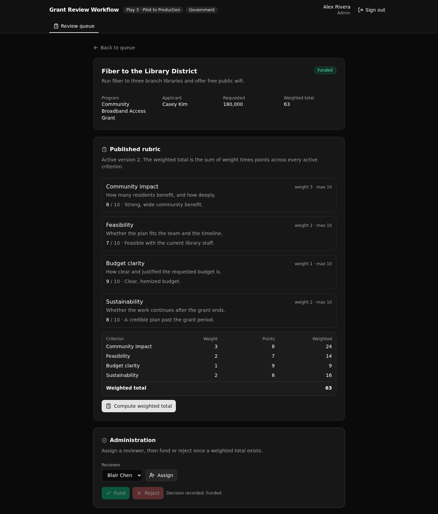

A governed backend for a public grant program. Applications are validated on intake, assigned to reviewers, scored against a published versioned rubric, and written to an audit trail.
An admin views a funded application: the published rubric, the weighted total the API computed (the sum of weight times points), and the audit trail behind it. No client can fake the score.

Speed is not the differentiator, control is. This app keeps the rules that matter in one readable Xano API layer a technical reviewer can approve before it ships.
A submission is checked server-side: the program is open, the deadline has not passed, and the amount is within the funding cap.
Applicant, reviewer, and admin. Each endpoint loads the caller and checks their role. A reviewer can only score an application assigned to them.
A program publishes a rubric with versions. Only the active version is scored against, and the API computes the weighted total.
Every state-changing action (submit, assign, score, compute, decide) is written to an append-only trail, visible on the detail screen.
Served under one pinned canonical, so paths are stable: /api:grant/<name>.
| Verb | Path | What it enforces |
|---|---|---|
| POST | auth/signup | Registers an applicant. Role is fixed to applicant server-side. |
| POST | auth/login | Verifies credentials, returns a bearer token. |
| POST | applications/submit | Applicant only. Intake validation with a clear reason on rejection. |
| GET | applications/queue | Reviewer sees only assigned, admin sees all, filter by status. |
| GET | applications/detail/{id} | One application with rubric, scores, and audit trail. |
| POST | applications/assign | Admin only. The assignee must hold the reviewer role. |
| POST | scores/record | Reviewer only, and only if assigned. Points bounded by the criterion max. |
| POST | applications/compute-score | Weighted total. Refuses until every active criterion is scored. |
| POST | applications/decide | Admin only. Fund or reject, only after a total exists. |
| GET | criteria/list | The active versioned rubric for a program. |
Plus programs/list, users/reviewers, and an idempotent seed/run. Thirteen endpoints in all.
One-click sign in with a seeded account for each role, so the access rules are visible immediately.
An applicant form that shows intake validation accept or reject, with the reason.
Applications scoped by role, filterable by status.
The rubric, per-criterion scoring, the computed weighted total, the audit trail, and the admin controls.
Paste this into your coding agent to start a new app from this template.
Start a new XanoTS app from the template at https://github.com/xano-scratch/grant-review-workflow Clone it, run `npm install`, then `npx xanots login` and `npm run xano:deploy` to get a live backend and frontend. Then adapt the tables in xano/tables and the endpoints in xano/api to my domain, keeping the API-layer role guards and the audit-trail pattern.
Or do it by hand:
git clone https://github.com/xano-scratch/grant-review-workflow cd grant-review-workflow npm install npx xanots login npm run xano:deploy
A live preview may be linked from the source repo. Those previews are ephemeral and expire, so deploy your own with the steps above for fresh links.